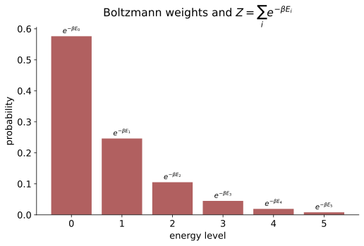

统计物理 II · 系综与配分函数
对标：Schroeder §6 / Pathria 入门章 ｜ 前置：sm-01、概率线、mech-03（Liouville）、信息论 III（最大熵） 统计力学的纲领：宏观热力学 = 微观力学 + 概率论。本页立起三大系综，核心资产是配分函数 \(Z\)——一个求和打包全部热力学；并兑现两张跨站欠条：\(S = k\ln\Omega\)（熵的微观身份）与"Boltzmann 分布 = 最大熵分布"（信息论线的会师）。

1. 微正则系综与熵的定义
基本假设（等概率原理）：孤立系统（能量 \(E\) 固定）在其 \(\Omega(E)\) 个微观态上等概率——合法性由 Liouville 定理背书（相空间体积演化不变，mech-03——不存在"偏爱某区域"的动力学理由）。
Boltzmann 熵：
为什么是对数【推导】：独立系统的 \(\Omega\) 相乘、熵要相加 ⇒ 对数唯一（信息论 I 熵公理化的同一论证——热力学熵与 Shannon 熵是同一个函数，差一个 \(k_B\ln 2\) 的单位换算：两条学科线在此正式合体）。
温度的微观定义【推导】：两系统交换能量，总 \(\Omega = \Omega_1\Omega_2\) 极大 ⇒ \(\frac{\partial\ln\Omega_1}{\partial E_1} = \frac{\partial\ln\Omega_2}{\partial E_2}\)——平衡时相等的量定义 \(\frac{1}{T} = \frac{\partial S}{\partial E}\)：温度 = 熵对能量的敏感度（"热从高温流向低温" = 总熵增的方向——第二定律从公理降为定理）。
2. 正则系综与 Boltzmann 分布
系统接触热库（温度 \(T\) 固定）。Boltzmann 分布【推导】：库的熵展开 \(\ln\Omega_{\text{lib}}(E_{\text{tot}} - E_s) \approx \text{const} - \frac{E_s}{k_BT}\)（一阶 Taylor——库大到温度不被扰动）⇒
最大熵殊途同归：给定平均能量约束下最大化 Shannon 熵——拉格朗日解恰是 Boltzmann（信息论 III §1 已完整推过，\(\beta = \frac{1}{k_BT}\) 就是那页的乘子）："热平衡 = 已知能量均值下最诚实的分布"——两种世界观（动力学的等概率 vs 推断的最大熵）给出同一公式，是统计力学最深的哲学注脚。
配分函数 = 全部热力学【推导各一行】：
（最后一条：比热 = 能量涨落——涨落耗散关系的第一例，neq-01 的主题预演；\(Z\) 与矩母函数（概率 IV）的同构显而易见：统计力学的配分函数就是概率论的 MGF，\(\ln Z\) = 累积量母函数——大偏差理论（it2-03）与统计力学共用一套变换的原因。）
样板全家：二能级系统（顺磁体：\(Z = 2\cosh\frac{\varepsilon}{k_BT}\)——Schottky 比热峰）；经典谐振子（\(Z \propto T\) ⇒ 均分）；均分定理【推导骨架】：能量中每个平方自由度贡献 \(\frac12 k_BT\)（高斯积分逐自由度分解——理想气体 \(U = \frac32Nk_BT\)、固体 Dulong–Petit \(3Nk_B\) 一步到位；低温失效——量子化能级冻结自由度，sm-03 接管）。
Maxwell 速度分布：\(f(v) \propto v^2e^{-mv^2/2k_BT}\)（Boltzmann 用于动能 + 球壳因子）——最概然/平均/方均根三种速度的手算标配。
3. 巨正则系综一嘴
粒子数也涨落（化学势 \(\mu\) 进场）：\(p_s \propto e^{-(E_s - \mu N_s)/k_BT}\)，巨配分函数 \(\Xi\)——量子统计（sm-03 的 Bose/Fermi 分布）在此系综下推导最顺；开放系统、吸附、化学平衡的语言。
4. 练习与要点
例 1（二能级全流程） 能隙 \(\varepsilon\) 的 \(N\) 个独立二能级：\(U = \frac{N\varepsilon}{e^{\varepsilon/k_BT}+1}\)、比热在 \(k_BT \sim \varepsilon\) 处峰值（Schottky 峰）——"能标 ≈ 温标时最热闹"：统计物理数量级直觉的第一课。
例 2（涨落公式实感） \(N\) 粒子理想气体：\(\frac{\sigma_E}{U} \sim \frac{1}{\sqrt N} \sim 10^{-11}\)（\(N \sim 10^{22}\)）——宏观量看似确定实为极窄分布（概率 V 大数定律的物理执照；也是"热力学在小系统失效"的定量预告——纳米尺度涨落显形，neq-01）。
例 3（Boltzmann 因子日用） 室温 \(k_BT \approx \frac{1}{40}\) eV：化学反应能垒 0.5 eV ⇒ \(e^{-20} \sim 10^{-9}\) 的瞬时成功率——Arrhenius 定律的来历；海拔 5 km 气压 \(e^{-mgh/k_BT} \approx 0.55\)——等温大气公式。"\(e^{-\Delta E/k_BT}\) 是自然界的通用汇率"。\(\blacksquare\)
下一页：当粒子不可分辨且遵守量子规则——Bose–Einstein 与 Fermi–Dirac 统计：白矮星、激光与金属电子的共同语言。